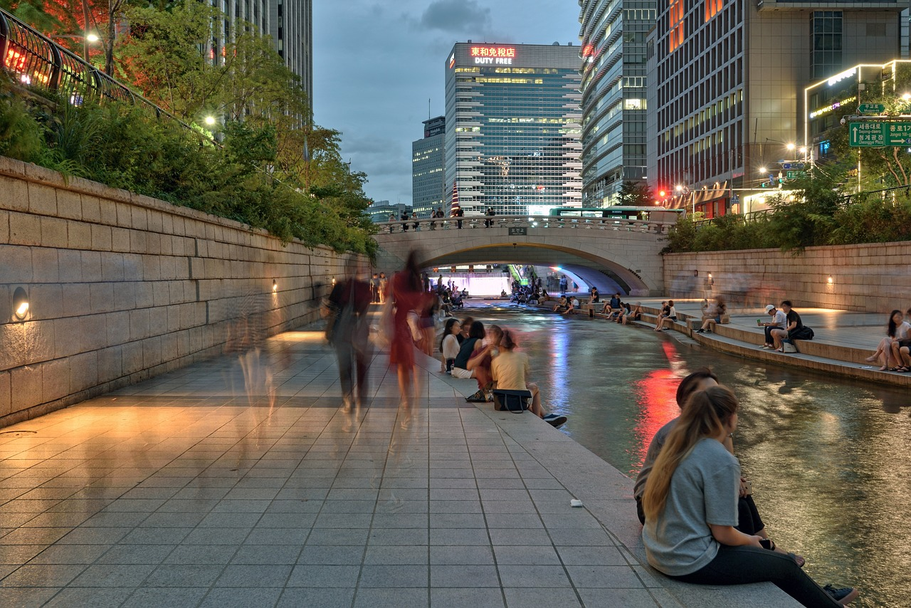
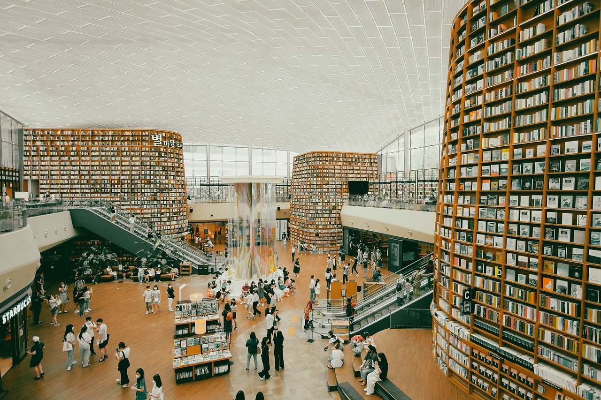
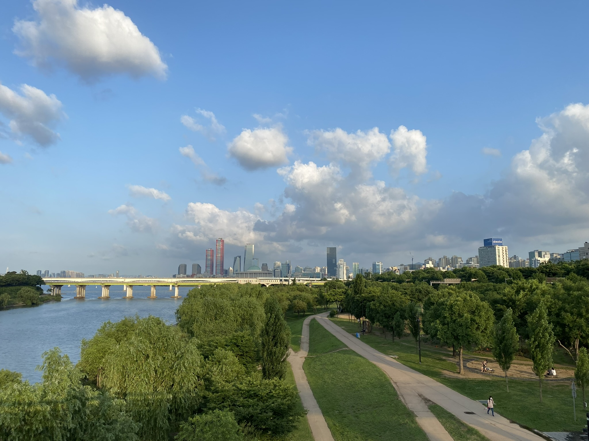

Seoul is a vibrant, dynamic metropolis that seamlessly blends ancient traditions with modern innovation. As the capital of South Korea, it pulsates with energy, offering visitors a rich tapestry of experiences to explore.
Seoul is also a city that never sleeps, with a buzzing nightlife scene that caters to every taste. Whether you're into trendy clubs, cozy jazz bars, or traditional Korean pubs known as "Po-cha", you'll find plenty of options to keep you entertained until the early hours.
Beyond its urban sprawl, Seoul is surrounded by natural beauty waiting to be explored. Take a hike up Namsan Mountain for panoramic views of the city, or escape to the serene beauty of the Han River Park for a relaxing stroll or bike ride.
In essence, Seoul is a city of contrasts and endless possibilities. With its unique blend of history, culture, cuisine, and modernity, it offers something for every type of traveler, making it a truly unforgettable destination.
Seoul beckons you with its blend of tradition and modernity, offering vibrant street markets, historic palaces, and cutting-edge technology. Explore diverse flavors, from street food to fine dining, and dive into the dynamic nightlife. With efficient public transport and welcoming locals, Seoul promises an unforgettable adventure, blending the past and the present in an electrifying cityscape.
Visit Seoul Today!
Project Summary Document